The Queen of the Red Realm
Between rolling emerald hills and shimmering blue tides of the Amari Sea stood the tranquil kingdom of the uncrowned Queen Misty.
A woman of proud Korean-Kazakh heritage, Misty possessed a spirit as vast as the open steppe and as serene as morning mist.
She wore the red of her heritage with quiet dignity. By day, she ruled with wisdom. She was always helpful to anyone in need. She devoted a major chunk of her time to teaching languages that unite people.
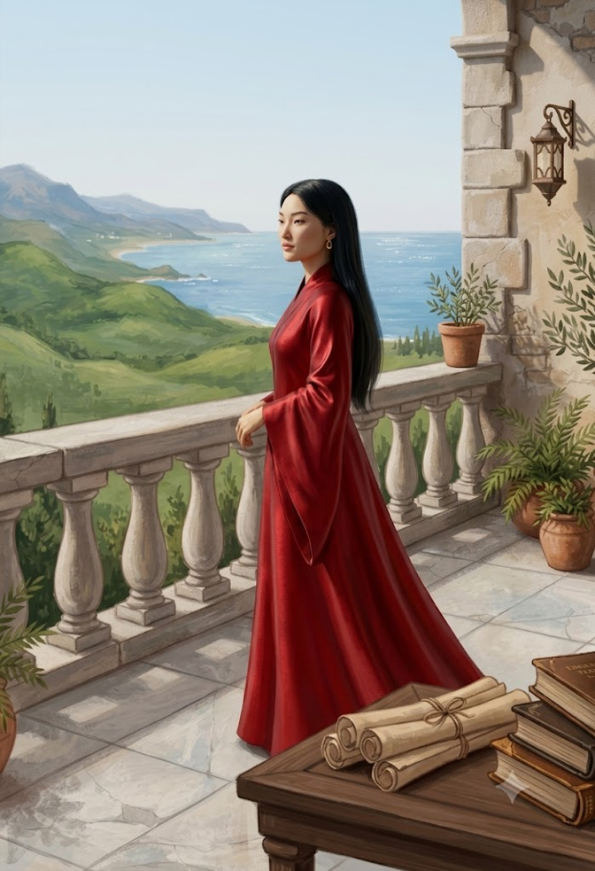
Dreams Beyond the Horizon
Though she had been distant from her husband for some time, Misty was never weak.
She was emotional and soft-hearted, yet fiercely empowered — a force of nature ready to fight whenever needed.
And somewhere inside her heart lived a dream: one day, when her little girls were old enough, she would pack their bags and take them to India.
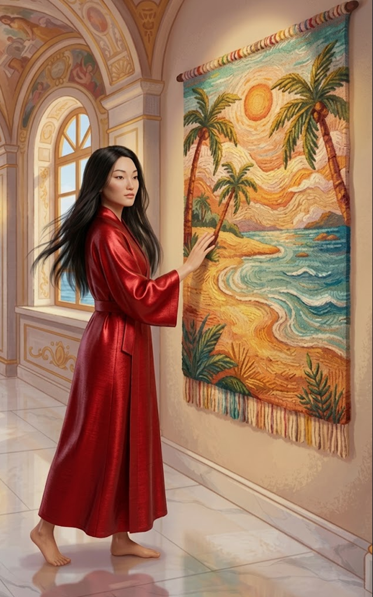
The Little Elsa
The Queen's eldest daughter was four-year-old Princess Rayana, a remarkably clever and observant little girl.
She bore an uncanny resemblance to her paternal grandmother.
And Rayana lived by one very important rule:
Walks? Elsa dress. Kindergarten? Elsa dress. Royal occasions? Obviously.
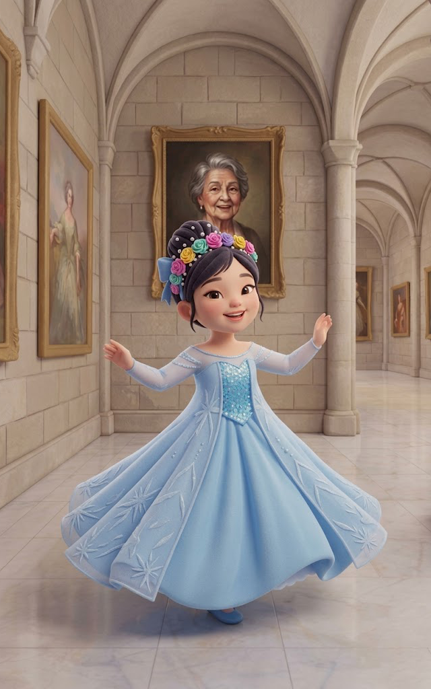
Accidental Masterpieces
Rayana was delightfully creative. Although she was only four, she loved to draw.
Once, she tried to draw a sweet red cherry on Queen Misty's wrist.
Her wobbly scribbles transformed the cherry into a completely unrecognizable abstract blotch.
Another afternoon, she carefully studied a pear.
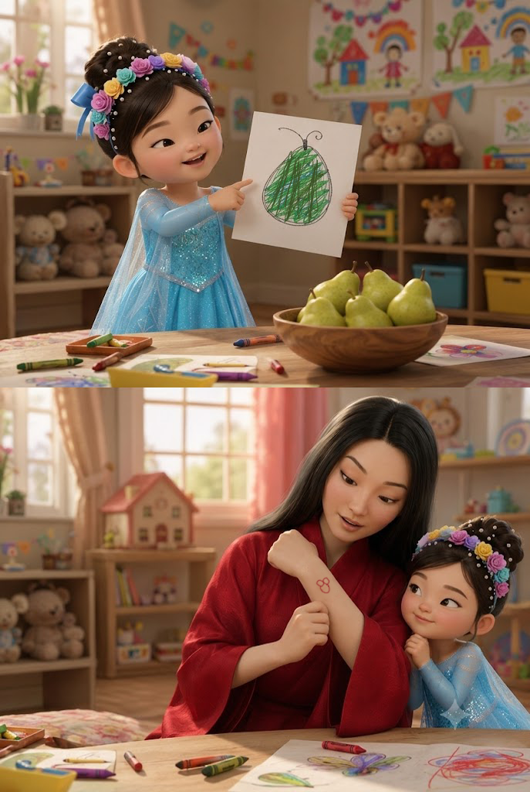
My Sweet Cherry
Beneath all the funny drawings lived a deeply gentle, compassionate soul.
Rayana was delicate and tender, and quick to burst into dramatic tears at the smallest bump.
But whenever she shared a loving moment with her mother, Queen Misty's heart melted completely.
Enter Rumi
The younger princess was two-year-old Maryam, fondly known to everyone as Rumi.
She had two adorable fountain-shaped bunches of short hair, tied with bands, and enormous curious eyes.
Having only recently learned to walk, Maryam navigated the world like a joyful little drunkard.
The entire household became experts at catching her before she crashed into something.
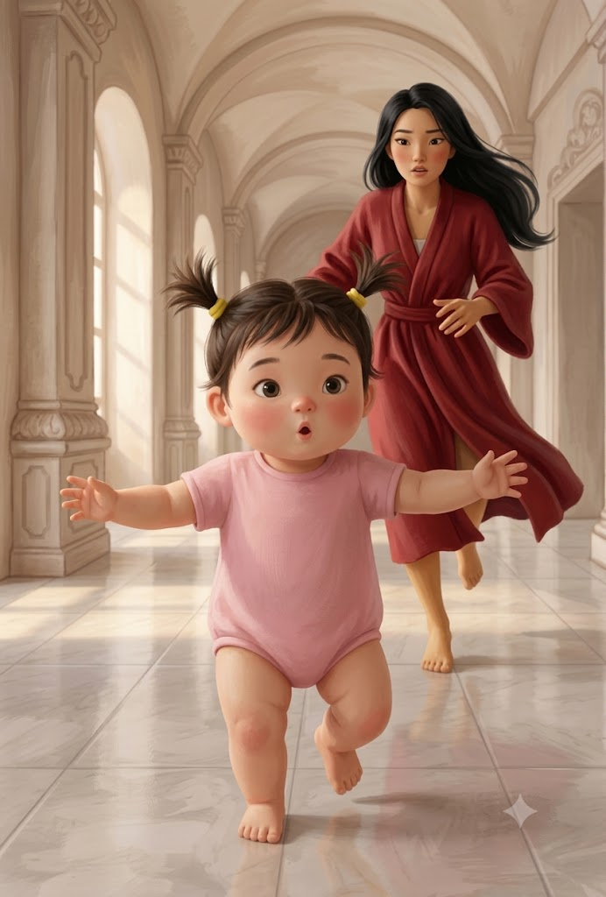
The Great Bucket Adventure
Maryam was endlessly curious, completely fearless, and always ready for another wild exploration.
During a cleaning day, her curiosity led her to squeeze herself into an upturned wash bucket.
Half her body disappeared inside. Her chubby legs poked out.
Eventually, Misty managed to pop the tiny explorer free.
Two Horses. Two Souls.
Whenever the sisters ventured beyond the palace gates, they rode safely upon Troy and Pasha.
Troy was a silent, lean white horse who moved with quiet, graceful calm. He was Misty's best friend across the battles.
Pasha was a muscular brown stallion — incredibly active, funny and always helpful.
Both carried the princesses safely upon their backs.
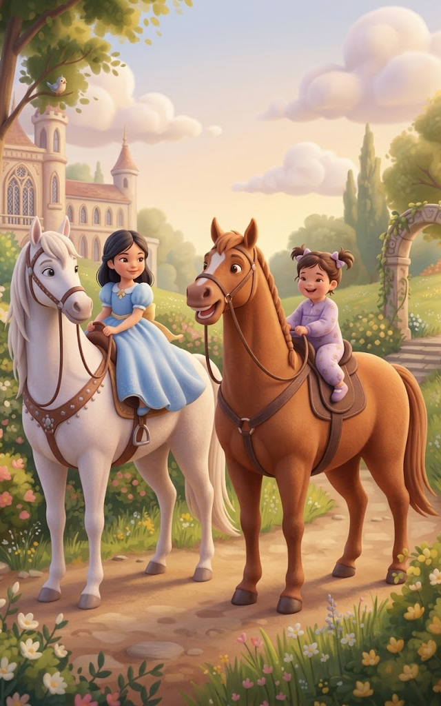
The Solitary Flower Plant
Behind the palace lay Queen Misty's beloved sanctuary: a lush, peaceful garden.
There, in a quiet flowerbed, lived one solitary flowering plant.
Misty loved to visit it and often nudged it to find a partner.
The plant, however, seemed perfectly content with its life.
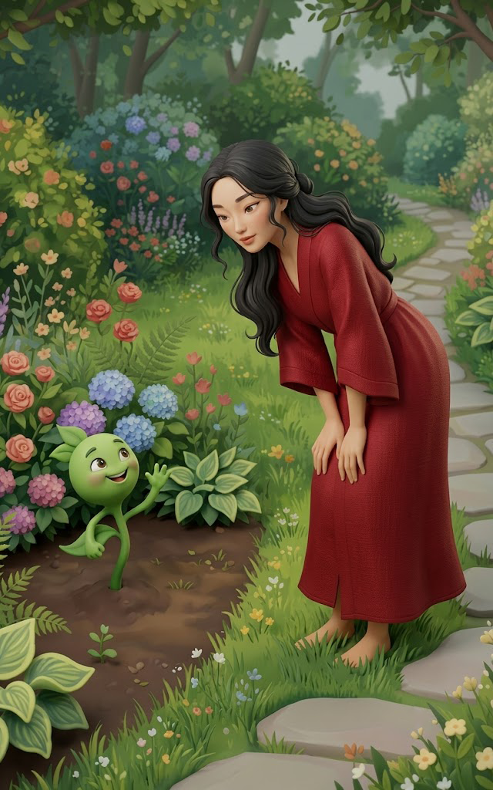
The Flowers and The Butterfly
The flower plant never felt lonely in the garden.
Because it had a special visitor.
A breezy little butterfly.
Everyone in the garden adored the butterfly. It was as amicable as anyone could possibly be.
The butterfly loved the blue irises and kept coming back for them. The flower plant loved seeing the butterfly arrive, so it waited right there everyday.
The butterfly liked it when people gifted bunches of flowers to each other. So the plant began saving flowers.
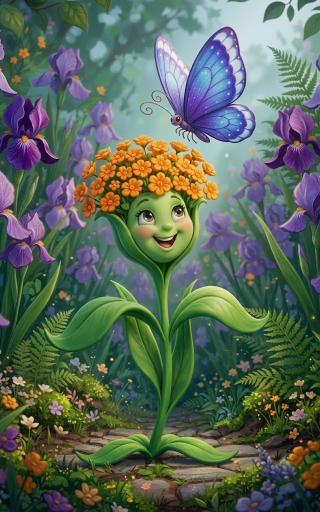
The Moon, the Sea & the Stars
High above the kingdom, the natural elements lived out an untamed romance.
The stars twinkled everyday, sometimes visible, sometimes not, but always there.
The Moon was sensitive, dramatic and moody. Her moods shifted across the dark sky.
Yet she never took a day off from shining upon the kingdom and caring for it.
Seeing this, Amari Sea was completely captivated.
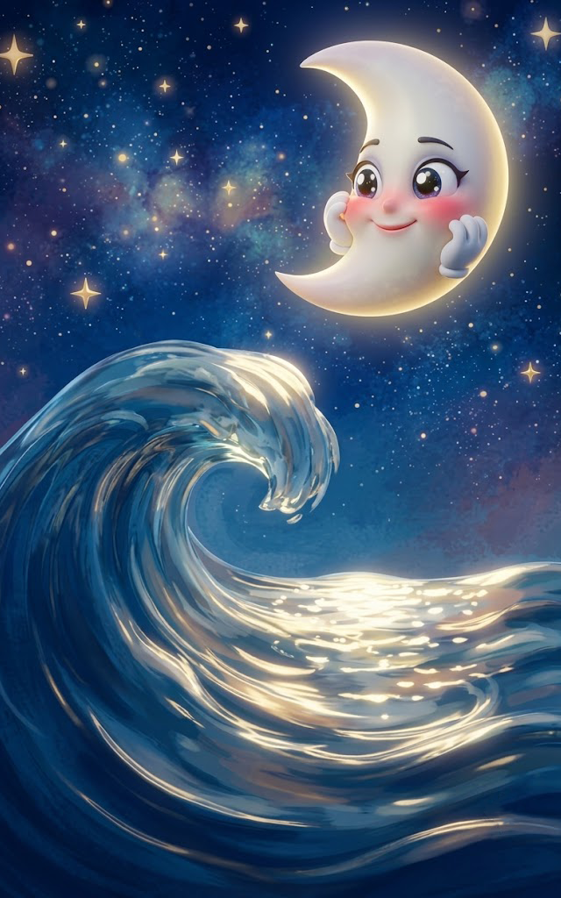
The Eternal Dance
The Sun and Moon existed in a perpetual, entangled relationship.
The Sun was constantly trying to brighten the Moon with its warmth and light.
Sometimes, however, the heat burned a little too fiercely. The Moon became uncomfortable.
They quarrelled. They sulked. One left the sky while the other took its place.
Playing in an unbroken, eternal loop.
Master of the Air Sword
Guarding the realm was Shan, a young, lean warrior of unmatched discipline.
Shan had mastered the legendary Air Sword technique.
His blade moved so quickly that the pure displacement of air could slice through a roaring torch flame.
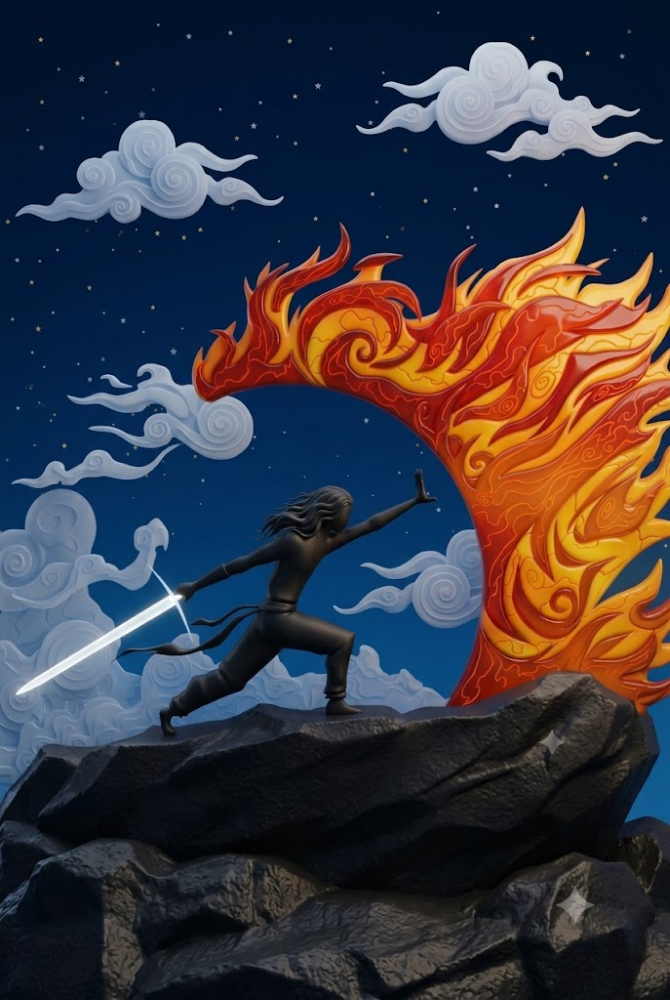
The Energy Keeps The Kingdom Lively
Roaming the court was a brave, young, delicate and beautiful warrior disguised as a man.
Clad from head to toe in rugged crocodile leather, she was willing to burn anything that threatened the kingdom. But behind the armor, Crocz was a magnetic and funny soul.
Her vibrant energy could make even the most serious gathering burst into chuckles.
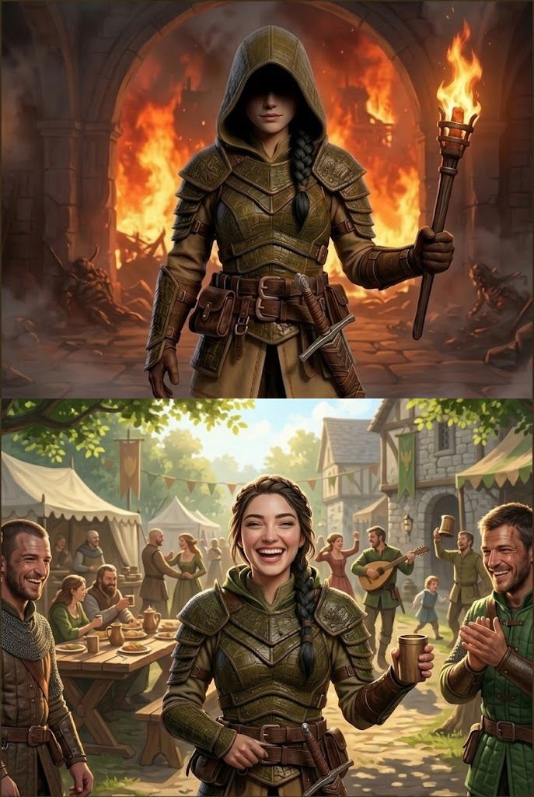
The Shadow in the Crowd
Sliding through the outer edges of the kingdom was a peculiar figure named Prasanna.
Once notorious for mass murders, Prasanna had undergone a complete transformation.
Living and dressing as a woman, the disguise allowed her to blend into the bustling crowds.
The Kingdom's Comedy Duo
Casper was a goofy, friendly ghost blessed with exceptional humor and a golden heart.
Casper's partner was Fang, a playful and sparkling mermaid.
Together they created countless moments of pure laughter and joy.
Not a single day went boring as long as they're at the Kingdom
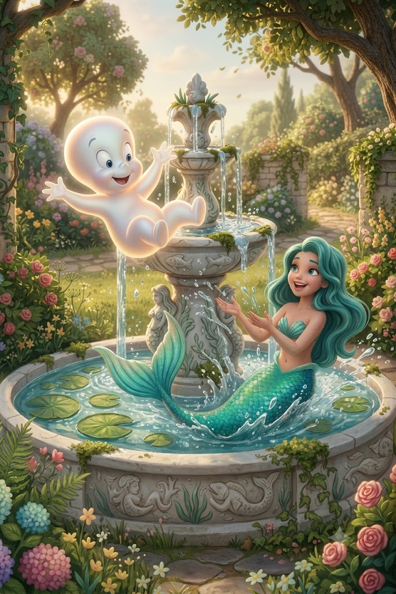
“Mother!”
Fang shared a uniquely heartwarming bond with Shikamaru, a quirky kangaroo who lived on the palace grounds.
The Kangaroo had many names and many roles.
But Fang had decided to address Shikamaru with one identity:
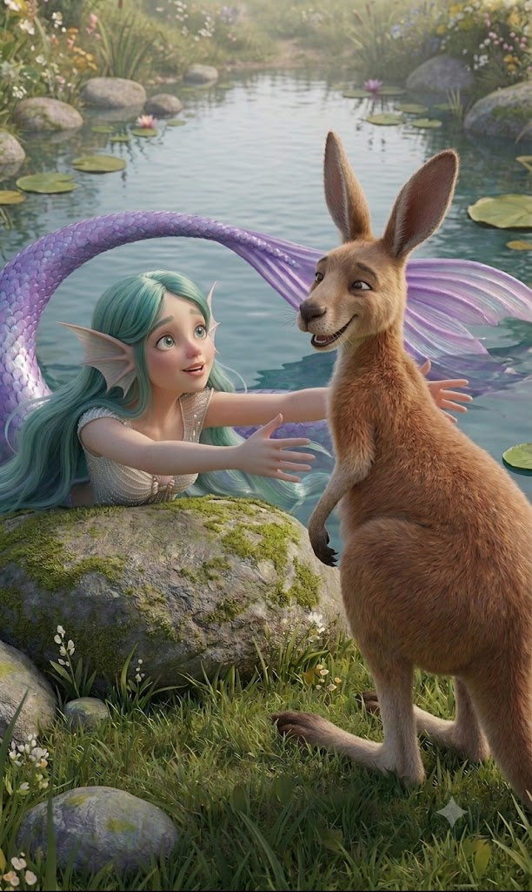
“Parrot's Fault!”
High in the palace aviary lived two memorable birds.
The Falcon was majestic, recently married, and repeatedly guilty of squawking bad words.
As punishment, he spent much of his time on the disciplinary perch, banned from talking.
Below him lived the colorful Parrot — spontaneous, hilarious, and the kingdom's permanent scapegoat.
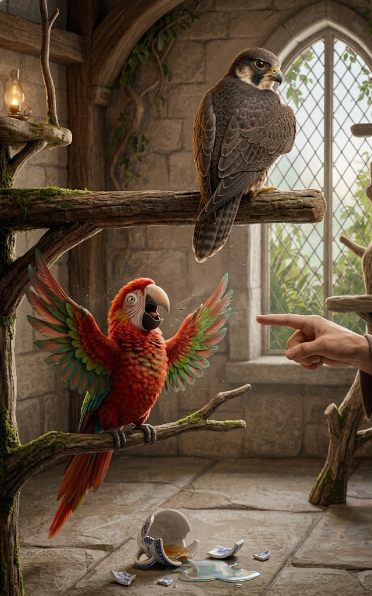
The Doctor and Debbie
Among Misty's trusted circle was Simba, a brilliant female doctor from Russian Dynasty.
Busy with duties and family, she rarely visited — but whenever she did, she did it with warmth.
Then there was Grandma Debbie.
Her infectious laugh could brighten even the gloomiest hall. She painted wholesome group pictures that brought everyone together.
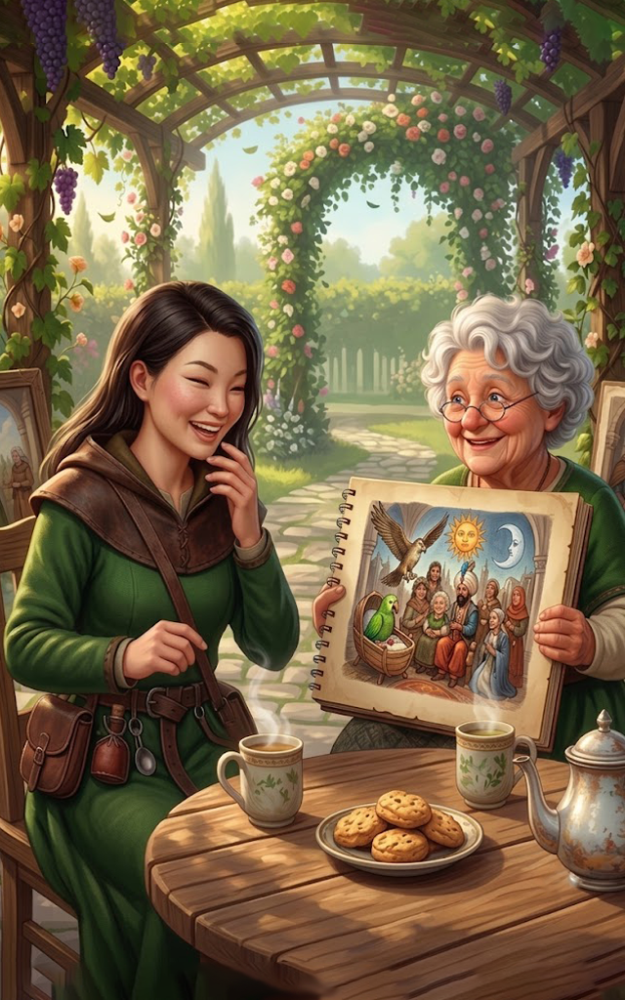
Five Years of Rayana
Tonight, every character gathered in the blooming garden beneath an illuminated starry sky.
The Moon shone. The Sea danced. The Sun happily joined the celebration.
The flower plant proudly wore new flowers, with the butterfly hovering right above. Casper and Fang made everyone laugh. The Parrot was blamed for a spilled glass of Pear Juice. Pasha laughed at Falcon and Parrot, Troy humbly smiled. Shan and Crocz stood on opposite sides after a friendly taunt. Prasanna maintained her secret identity. The Falcon stood nearby with his beak taped shut.
Queen Misty pulled her close, kissed her cheek and whispered:
Rayana closed her eyes. Her palms joined. She made her wish.
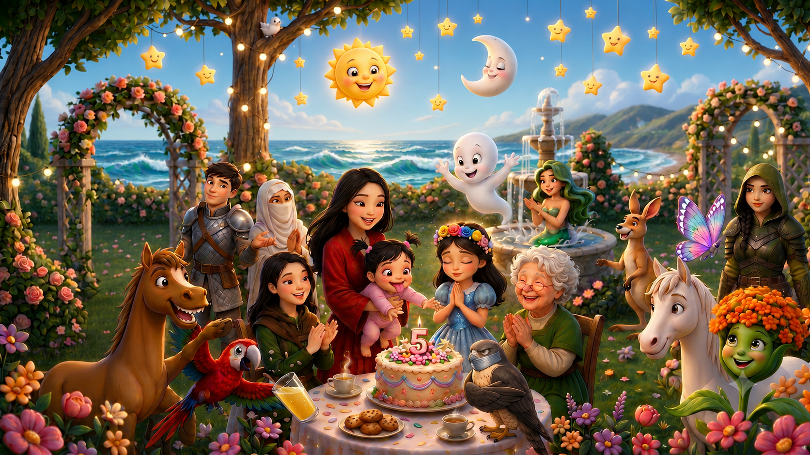